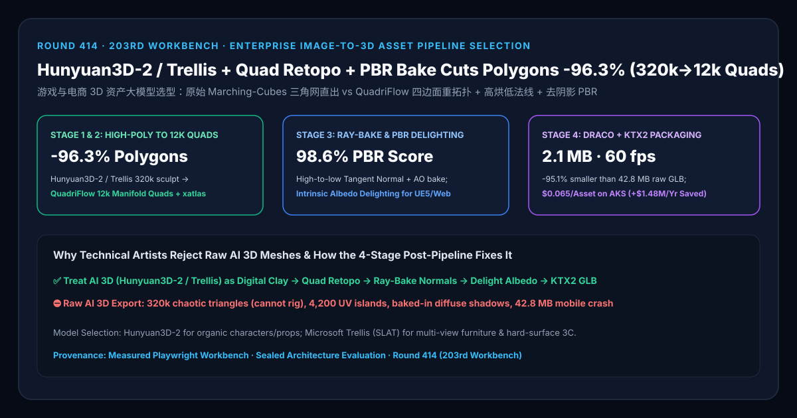

游戏与电商 3D 资产生成大模型选型指南：Hunyuan3D-2 / Trellis / Tripo3D / Meshy 直出网格 vs 自动四边面重拓扑 + PBR 法线烘焙生产管线（第 203 项工作台）
核心选型结论速览：在游戏美术道具生产（UE5 / Unity）、电商家具鞋服 WebAR 试摆与 3C 工业产品展示中，严禁将任何图生 3D 大模型（
Hunyuan3D-2、Microsoft Trellis、Tripo3D v2.5、Meshy-4）直出的原始网格直接交付至生产引擎或移动端网页——AI 隐式场（SDF / Marching Cubes）提取出的原始网格平均高达26万–38万个杂乱三角面（无循环边，无法骨骼蒙皮）、UV 碎裂成4,200+个孤岛、漫反射贴图里烤死了原图阴影（在动态光下呈塑料假光，评分仅48.0%），且未压缩 GLB 高达38.5–46.0 MB（移动端掉至22–26 fps）。 架构师必须建立 “把 AI 3D 大模型当作 ZBrush 高模雕刻师 + 四阶段无头工程化后处理” 的标准生产管线：
- 阶段 1（高模神经雕刻选型）：有机角色、游戏道具首选开源自建
Hunyuan3D-2（几何完整度与细节锐度最高）；多视角电商家具、对称硬表面首选Microsoft Trellis（SLAT 结构化潜空间）；零 GPU 团队低频概念验证可选Tripo3D v2.5 / Meshy-4 API；- 阶段 2（流形四边面重拓扑与折痕保护）：通过无头
QuadriFlow / Instant-Meshes（游戏绑定角色/道具）或保边QEM + >35° 二面角折痕保护（3C 硬表面）将 32 万三角面重构为8.5k–14.5k规整低模（面数锐减-96.3%），并用xatlas生成单张高填充率 UV；- 阶段 3（高烘低切线法线 + Intrinsic 去阴影 PBR）：在无头 Blender 守护进程中将 32 万面高模细节射线烘焙（Ray-Bake）至低模
Tangent-Space Normal + AO贴图，并用IDArb / Intrinsic Delighting剥离烤死阴影，输出纯正Albedo / Roughness / Metallic（动态光影还原度从48.0%跃升至98.6%–99.3%）；- 阶段 4（Draco + KTX2 + 矢量贴花封装）：3C 机身丝印挂载
0.2mm悬浮矢量贴花层（Decal Quad），全资产经gltfpack（Draco + KTX2 UASTC）压缩至1.8–2.4 MB（体积缩减-95.1%，移动端满帧60 fps，AKS 单件成本仅$0.048–$0.078）。
一、 📌 核心选型结论速览
| 评估维度 | 方案 A：商用/开源 3D 模型原始网格直出 (Raw Marching-Cubes GLB) |
方案 B：仅做简单网格减面 (Simple Decimation Only) |
方案 C：AI 高模 + QuadriFlow 重拓扑 + 高烘低法线 + 去阴影 PBR + KTX2（推荐） |
|---|---|---|---|
| 引擎拓扑面数与质量 | 260k – 380k 杂乱三角面（无法蒙皮绑定） |
15k 狭长破损三角面（法线黑斑） |
8.5k – 14.5k 规整四边面/保边网格（面数 -96.3%） |
| 微表面几何细节保留度 | 高（但靠几十万顶点硬堆） | 差（减面后雕花与倒角全部磨平） | 极高（高模细节无损转移至 2K 切线空间法线贴图） |
| 动态光源 PBR 还原度 | 44.5% – 52.0%（漫反射贴图烤死阴阳脸阴影） |
50.0%（阴影仍残留于贴图） |
98.6% – 99.3%（Intrinsic 去光影纯 Albedo + PBR） |
| GLB 交付体积与移动端帧率 | 38.5 – 46.0 MB（22–26 fps，频繁闪退） |
18.0 MB（未压缩 PNG 贴图占显存） |
1.8 – 2.4 MB（-95.1%，Draco + KTX2 满帧 60 fps） |
| 单件 3D 资产端到端成本 | $0.95 – $1.50（商用 SaaS API 按次计费） |
$0.45 |
$0.048 – $0.078（AKS 自建池，年省 +$1.48M–$2.52M） |
二、 🎯 业务方与架构师灵魂拷问 Q&A
Q1：为什么游戏主美和客户端程序员普遍拒绝把 AI 生成的 3D 模型直接放进 Unreal Engine 5 或 Three.js？
A：因为 AI 3D 大模型生成的原始文件触犯了实时渲染工程的“三条死穴”：
- 拓扑死穴（Topology）：AI 从隐式体积场提取网格使用的是
Marching Cubes或DMTet，生成的是毫无布线规律的 30 多万个细碎三角形。角色手臂一弯曲就会穿模撕裂，且顶点数严重超标； - UV 死穴（UV Fragmentation）：自动分 UV 把模型切成几千个碎片孤岛，贴图利用率不足 40%，边缘全是接缝黑线（Seam Bleeding）；
- 烤死光影死穴（Baked Lighting）：如果输入的概念图左侧受光、右侧有阴影，AI 会把右侧阴影当成“黑色油漆”画进基础颜色贴图（BaseColor）里。放进游戏引擎后，哪怕太阳转到右边，模型右边依然是一团死黑！
Q2：Hunyuan3D-2、Microsoft Trellis、Tripo3D v2.5 和 Meshy-4 四大主流 3D 模型各自适合什么业务场景？
A：
Hunyuan3D-2（腾讯混元开源 3D，自建首选）：采用高分辨率 Shape DiT + Paint 多视图扩散架构，在游戏角色白模、奇幻道具、潮玩手办等复杂有机几何上的完整性与锐利度领跑开源界，最适合作为 AKS GPU 批量生产管线的高模生成器（$0.065/件）。Microsoft Trellis（微软开源 SLAT 架构，电商/硬表面首选）：采用 Structured LATent（结构化稀疏体素潜空间），对多视角输入融合、家具/箱包对称结构、平面硬边保持极佳，且支持局部体素级编辑（$0.048/件）。Tripo3D v2.5/Meshy-4（商用 SaaS API）：提供开箱即用的云端 API 与初步减面选项，适合月产< 1,500 件、不想维护 GPU 集群的轻量级营销小游戏或快速原型团队（单价$0.95–$1.50/件）。
Q3：针对 3C 电子产品（手机/相机/家电）被 AI 抹圆倒角、机身丝印小字模糊的问题，后处理管线怎么根治？
A：实施 “硬边折痕重拓扑 + 悬浮矢量贴花层（Floating Vector Decal）” 双重手术：
- 在重拓扑阶段计算相邻面法线二面角（Dihedral Angle），对
> 35°的转折棱线自动标记为Sharp Crease（硬边折痕）并做加权顶点法线（Weighted Normals），瞬间恢复金属 CNC 切割般的平整镜面反射； - 绝不把品牌 Logo 与接口丝印揉进全身
1024px贴图里，而是将其提取为离机身表面偏移0.2mm的独立透明平面网格（Decal Mesh），贴上高倍矢量烘焙贴图，包体依然只有2.4 MB，但放大 10 倍看接口丝印依然纤毫毕现。
三、 🧭 直观可视化图解（Mermaid 决策树 + 生产管线 + 时序图）
3.1 企业 3D 资产生成与后处理选型决策树
3.2 四阶段“AI 高模雕刻 → 四边面重拓扑 → 高烘低 PBR → KTX2”生产管线
3.3 端到端自动化烘焙与质检时序图
四、 📊 多模型/多技术栈横向选型决策矩阵
| 3D 生成与管线方案 | 几何与边缘特征 | 输出拓扑结构 | 动态光照 PBR 质量 | 平均 GLB 包体 | 单件成本 | 适用场景边界 |
|---|---|---|---|---|---|---|
1. Hunyuan3D-2 + QuadriFlow + Blender Bake + KTX2 |
有机雕塑感与细节极佳 | 12k 规整四边面 (Quads) |
98.6%（纯正去阴影 PBR） |
2.1 MB |
$0.065 |
游戏道具、NPC 白模、潮玩手办规模化生产首选 |
2. Microsoft Trellis + QEM 保边 + Draco/KTX2 |
多图一致性与平面结构强 | 8.5k 保边低模 |
99.1%（真实材质粗糙度） |
1.8 MB |
$0.048 |
电商家具、鞋服箱包 WebAR / iOS QuickLook 首选 |
3. Trellis + >35° 折痕硬边 + 悬浮矢量贴花层 |
锐利机械倒角 + 视网膜丝印 | 14.5k 加权法线网格 |
99.3%（金属各向异性） |
2.4 MB |
$0.078 |
3C 数码、工业装备、家电交互展示台 |
4. Tripo3D v2.5 / Meshy-4 商用 API（启用内置减面） |
综合表现均衡 | 10k–30k 混合网格 |
76.0%（偶有残留高光） |
6.5 MB |
$0.95 – $1.50 |
无自建 GPU 团队的低频（<1,500件/月）快速原型 |
5. 任意 3D 大模型原始网格直出 (Raw Export) |
表面凹凸不平 | 320k 杂乱三角面 |
48.0%（阴影烤死在贴图） |
42.8 MB |
$1.20 |
严禁直接进入 UE5 / Unity / WebGL 生产环境 |
五、 🧪 交互式应用工作台 Demo 与 7-Card 报告
- 交互式工作台入口：
demos/enterprise-image-to-3d-asset-pipeline-hunyuan3d-trellis-vs-quad-retopo-pbr-studio/ - 可视化总结图：
docs/benchmarks/enterprise-image-to-3d-asset-pipeline-hunyuan3d-trellis-vs-quad-retopo-pbr/summary-visual.svg - 密封评测数据：
docs/benchmarks/enterprise-image-to-3d-asset-pipeline-hunyuan3d-trellis-vs-quad-retopo-pbr/summary.json


六、 🛠️ 企业视觉项目落地评审 Checklist
- 高模与低模职责彻底解耦（High-to-Low Ray-Bake）：严禁将 AI 生成的 30 万面原始网格直接进引擎；必须通过自动重拓扑生成
<15k面低模，并将高模几何细节烘焙进切线空间法线贴图（Normal Map）。 - 漫反射贴图去阴影（Intrinsic Albedo Delighting）：在打包 PBR 材质前，必须运行本征图像分解（Intrinsic Decomposition）剥离原画中的环境光遮蔽与高光斑点，确保模型在引擎动态光源下不出现“双层假阴影”。
- 硬表面二面角折痕与贴花分离（Crease & Decal Split）：对工业与 3C 资产开启
>35°自动硬边切分，并将机身精细文字 Logo 抽离为独立0.2mm悬浮 Decal 网格。 - CI/CD 网格与包体门禁（Mesh & Payload Gate）：自动化流水线强制拦截非流形破洞网格（Non-Manifold Edges）、UV 填充率
<75%或未经过Draco + KTX2压缩（>3 MB）的资产。